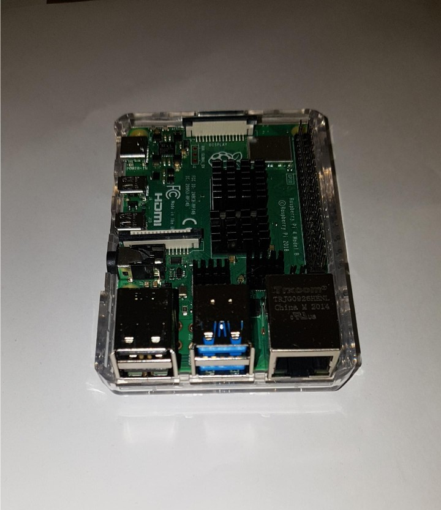
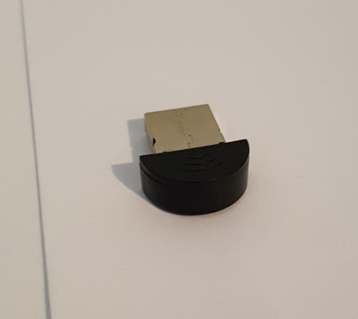
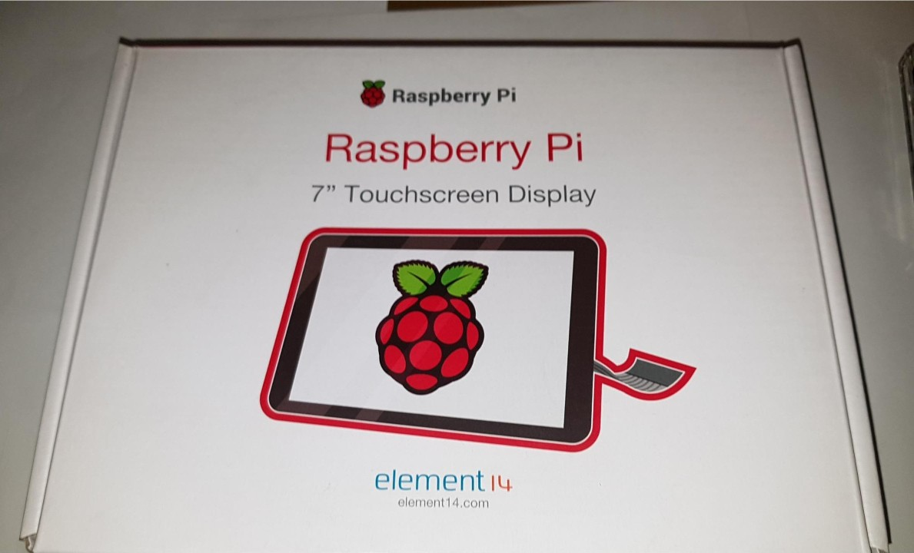
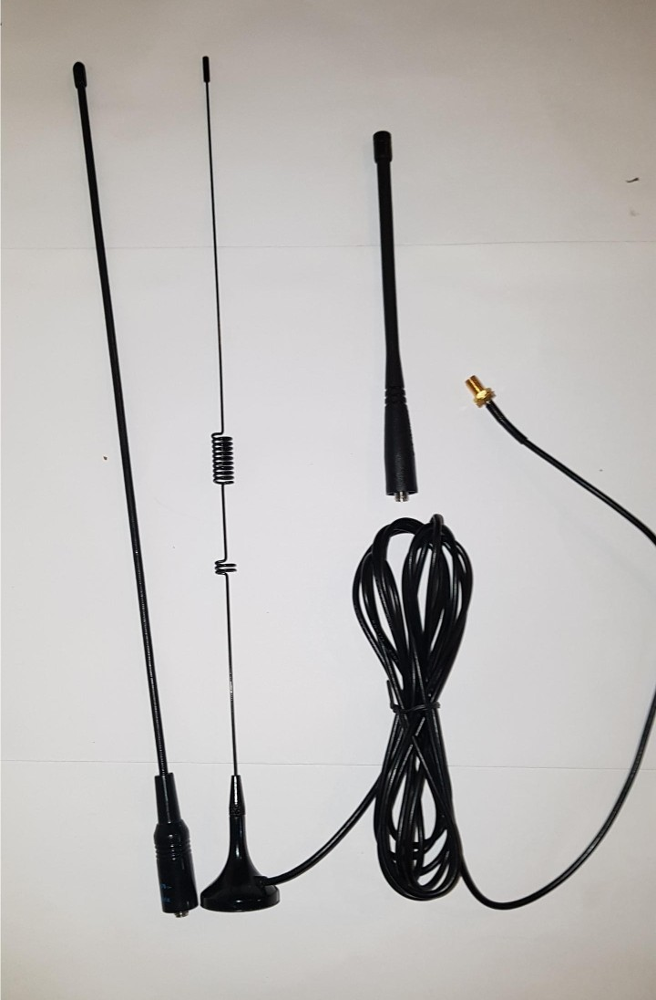
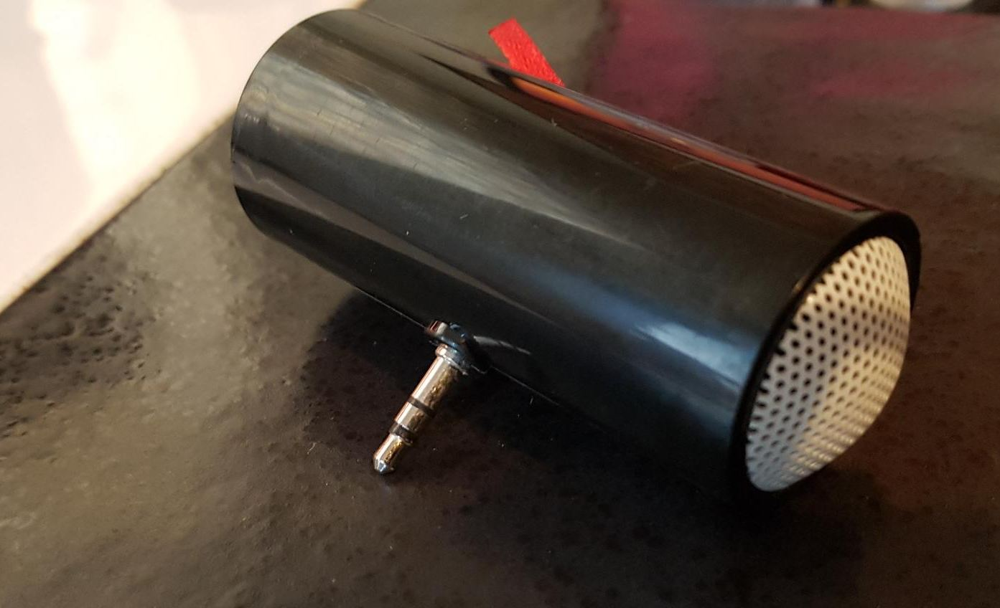

The objective of this project is to recreate an encoder/decoder for images and video sent by Slow Scan Television (SSTV). SSTV is a way to transmit and receive an image or series of images or video using low frequency radio transmissions. Standard analogue television requires a bandwidth of 8MHz wide channels; however, SSTV only requires a bandwidth of 3Khz. (Wikipedia, 2020). With Slow Scan Television, the information for the image or series of images is encoded into a tone, which is transmitted and when received and decoded it is reverted to the original image. (Wikipedia, 2020) SSTV is predominantly used by ham radio enthusiasts, however this technology has much wider potential applications for more effective communications systems - especially for emergency services, first responder or remote workers.
Our chosen target audience is emergency workers in the case of natural disaster. The project will begin by building a proof of concept using a Raspberry pi 3 or 4 board, an integrated touch screen housing, ganged 18650 battery removable power supplies, a USB microphone, and a miniature speaker connected by the 3.5mm output jack present on the Raspberry Pi board. This initial proof of concept will run an android emulator, running android based apps. We aim to build on new and existing technologies to deliver an easy to use, portable communication device, specifically aimed at emergency service personal use in the unfortunate event of a natural disaster.
  Raspberry Pi 4b(L); USB microphone (C); Capacitive touch screen for raspberry pi (R)
The motivation behind this project is to create an extremely useful, and potentially lifesaving, piece of technology on a relatively simple execution and low-cost budget.
Over the past 12 months, it has been devastatingly evident how catastrophic the effect of bushfire is, both on a local and a global scale. Increasingly bushfire seasons are starting earlier, and the scale and intensity of them is reaching unprecedented levels. “The extensive and long-lived fires appear to be the largest in scale in the modern record in New South Wales, while the total area burnt appears to be the largest in a single recorded fire season for eastern Australia” (BOM, 2019).
ITU states that “in the initial hours in the aftermath of a disaster, people want to be informed so that they understand what is happening and assess how they, their families and friends can receive support. Most recently, radio has played a key role in the Australian Bushfire response, helping responders to keep local populations up-to-date and coordinate and execute evacuation plans“ (ITU, 2020, para 5-6). If infrastructure is destroyed or signal quality is reduced to a significant level by fire effects, any messages sent through mobile networks or standard broadcast radio networks are rendered useless.
With statistics like these, it is increasingly evident of how vital this technology is to develop. Bushfires are no longer isolated to small rural areas of low populations. DUring the 2019-2020 bushfire season, evacuations were required in the Melbourne suburbs of Bundoora, Greensborough and Mill Park, 20 kilometres from the CBD, as an out-of-control blaze crept dangerously close (ABC, 2019).
This project could be used in natural disasters, for Paramedics working in remote locations, for First Responders at mine sites or even for the Royal Flying Doctors. Images and video could be sent and received where normal communications have stopped functioning, have severely degraded signal, or have insufficient infrastructure in the area to operate. THe project could also provide doctors with a way to give consultations to those living far from any regional centre and to send images between Doctor and patient.
This project could also be used for agricultural projects in remote areas without infrastructure for digital mobile phone service, or even in the developing world - giving the opportunity to send images and data from point to point.
 Our research shows that there is little currently available that is similar to our imaging communication tool. UHF/VHF frequency radio has traditionally been used by Emergency Services, however this technology only transmits audio. We have considered whether a user could run two existing mobile apps on their phone - one to encode images and sending sound bites (SSTV encoder) and the other to receive sound bites and decode them to images (Robot36) - however in the event of extreme heat, such as a bushfire, the heat would dramatically affect the performance of the phone, potentially rendering it useless. Whilst there are many audio communication devices in the market that are currently used by Emergency services, none are quite like ours. We use the combined practicalities of SSTV and UHF/VHF radio to enable our device to transmit both audio and visual elements over low frequencies.